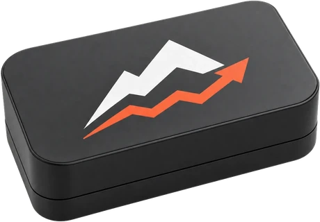

Paso 1 de 2
Poné el sensor
en la barra
Se pega con los imanes al eje de la barra, entre el agarre y los discos.
Instalá la app antes de usarla. En iPhone, Safari borra los datos guardados de un sitio a los 7 días sin visitas, y con eso se iría tu historial. Tocá Compartir y después Agregar a inicio.
Carga en la barra
kg
Debería salir a
—m/s
Zona
—
Última vez
—
Apoyá la barra un segundo antes de levantar: el sensor se calibra solo en esa pausa.
Press banca
60 kg
Calibrando
Calibrando
Dejá la barra apoyada un segundo.
REP 01
m/s
0
REPS
—
MEJOR
—
PÉRDIDA
Serie terminada

Historial
Últimas 18 semanas
0 sesiones
Tus series se guardan sólo en este teléfono: no hay cuenta, no hay servidor y no se sube nada. Exportar CSV te las descarga todas. Términos, privacidad y seguridad